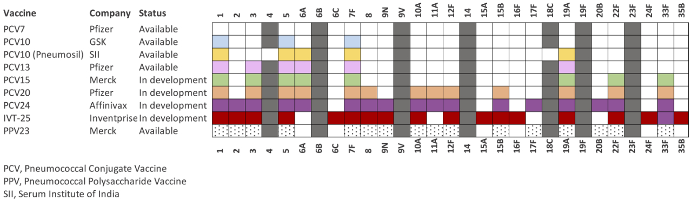

Project Outline
Pneumococcal Disease
Streptococcus pneumoniae (the pneumococcus) is the leading vaccine preventable cause of pneumonia, septicaemia and meningitis in young children. In 2015, it was estimated to be responsible for about 9 million cases of disease and over 317,000 deaths in children under 5 with the main burden in low- and middle- income countries (Wahl 2018).

Pneumococcal conjugate vaccines (PCVs) target the capsule surrounding pneumococcal cells has proven to be very effective in reducing pneumococcal disease since its advent in 2000. However, there are at least 100 different forms of capsule, or serotypes, based on antigen-antibody reaction. The current PCVs are only able to target some serotypes and the population overall is able to evolve to evade the vaccine. This creates an arms race between vaccine and pneumococcus.
GPS
The Global Pneumococcal Sequencing (GPS) project, was set out to create a global picture of the pneumococcal evolution during the vaccine introductions using whole-genome sequencing. The information has enabled us to better understand how the pneumococcus makes its capsule and makes its escape, and improve the design of new vaccines.
The GPS project was conceptualised by Prof Stephen Bentley at the Wellcome Sanger Institute and Prof Keith Klugman in Emory university over a pint in The Queen’s Arms in Kensington, London in 2009. They discuss the feasibility of carrying out a genomic surveillance programme that would sequence the genomes of over 20,000 pneumococcal bacteria collected from around the world. Initially the focus was to better understand the frequency of antibiotic resistance and to discover new resistance mechanisms but they were soon persuaded by the Bill & Melinda Gates Foundation that the primary focus should be on understanding vaccine escape.
To achieve such a large-scale project, they needed help from other world-leading scientists. Dr Lesley McGee from the US Centers for Disease Control and Prevention, an expert in pneumococcal microbiology and vastly experienced in large scale international studies, was brought on board as one of the project leaders. They also established strategic collaborations with other experts: Dr Anne von Gottberg from the National Institute Communicable Diseases, South Africa; Prof Martin Antonio from the Medical Research Unit The Gambia at the London School of Hygiene & Tropical Medicine; and Prof Dean Everett from Malawi-Liverpool-Wellcome Trust Clinical Research Programme.
And when Keith took up a new role as Head of the Pneumonia Program at the Bill & Melinda Gates Foundation, Prof Robert Breiman from Emory University took over the reigns as Principal Investigator. With the financial support from the Gates Foundation, the Sanger Institute and the US Centers for Disease Control and Prevention, the Global Pneumococcal Sequencing (GPS) project was established in 2011.
By the end of 2019, the GPS project sequenced >26,000 pneumococcal isolates from >50 countries, representing a global collaboration of almost 100 scientists from around the world. Like previous studies, we have seen that after the introduction of vaccines, pneumococci with vaccine serotypes were replaced by those with non-vaccine serotypes. But with large-scale genome data, we have gone beyond that, looking for the first time at all the strains circulating globally.
The GPS project has made a major breakthrough in defining pneumococcal strains in high-resolution by taking genome-wide DNA variations into account (Gladstone and Lo et al 2019). This robust typing method is coupled with a coherent and dynamic naming system (GPSC) so as to enable joint efforts in tracking pneumococcal lineages across geographical regions and over time, especially before and after the roll-out of PCVs.
Using this typing scheme, we found a subset of strains were globally disseminated, many of which were associated with antibiotic resistance and composed of vaccine- and non-vaccine serotypes. Our recent work, published in the Lancet Infectious Diseases, has shown that these globally-spreading strains played an important role in the arms race by driving the expansion of pneumococcal bacteria with non-vaccine targets (Lo and Gladstone et al 2019).
The DNA data also allowed us to unlock the genetic diversity of the capsule and discovered nine potential new serotypes (van Tonder et al 2019) and shed light on previously unrecognised antimicrobial resistance in pneumococcus (Lo et al 2019). For more exciting findings, please browse our publication page.
Open data and findings
The GPS project generates a rich source of genome and epidemiological data for tracking pneumococcal transmission and evolution on both national and international levels. The genome data are deposited in ENA. High-level analyses are interactively presented by countries and by strains using Microreact and Phandango. Illustrations of how to use these resources are summarised in a recent publication (Gladstone et al 2020) and videos on the Resources pages.
What’s next?
In 2020, the GPS project is marching into the next chapter, GPS2. The outputs of GPS highlight the needs on
- Increasing geographical coverage in countries, especially those with high disease burden, such as India, Nigeria, DRC Congo and Pakistan, together these four countries accounted for approximately 50% of global pneumococcal disease burden in 2015.
- Supporting local data generation and analysis to achieve a working system for long-term and sustainable genomic surveillance in LMICs by providing capacity building and bioinformatics training.
- Engaging with policy makers to communicate the value of the data and the importance of study findings for decision-making in pneumococcal disease prevention.
- SIREVA to establish a framework for integrating whole-genome sequencing in the ongoing surveillance in Latin America.
- Professor Moon Nahm’s lab at the University of Alabama to characterise capsule structure of the nine potential new serotypes.
- NHMRC Centre of Research Excellence for Pneumococcal Disease Control in the Asia-Pacific (CRE-PDC) at the Murdoch Children's Research Institute to understand the sustainability of national immunisation PCV programs in the Asia-Pacific region.